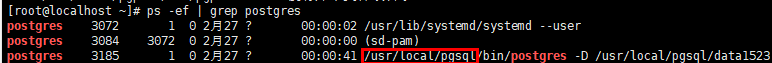

前提条件
- 1.6.0及后续版本在执行实例注册前，请检查数据库安装路径下bin/lib/share文件属主是否为root，若是root请在/opt/DataBackup/ProtectClient/Plugins/GeneralDBPlugin/bin/applications/postgresql/conf/switch.conf配置文件中将enable_root配置项取值设置为1。
- 对于备份HACS（High Availability Cluster Server，高可用性集群服务软件）场景下的PostgreSQL数据库实例，目前本产品仅支持PostgreSQL数据库以单实例进行备份。
- 注册数据库账户前，请先确保账户具有以下所需的最小权限。配置方法如下，以账户teste_bkp为例说明：
- 登录权限：由于注册PostgreSQL单实例下的数据库、执行备份以及恢复过程都需要通过数据库账号登录到指定数据库，需执行CREATE ROLE teste_bkp LOGIN PASSWORD 'teste_bkp';，使账户必须具有最基本的登录权限，并通过以下方式登录数据库，然后可查看数据库版本号，其中/usr/local/pgsql/bin/psql代表psql脚本的路径，-h参数代表数据库实例所在主机IP，-p参数代表数据库实例的端口号。
su - postgres su - postgres -c '/usr/local/pgsql/bin/psql -h 数据库IP -p 端口号 -U teste_bkp -d postgres'
- 读取配置文件权限：登录数据库后，通过GRANT pg_read_all_settings TO teste_bkp;设置权限。
- 函数执行权限：需要具备pg_backup_start函数执行权限和pg_backup_stop函数执行权限才可以执行备份，故需要赋予函数执行权限：
通过1查询到的版本号，如果版本号为15.0及以上，通过以下命令赋予权限：
1）赋予pg_backup_start函数权限：GRANT EXECUTE ON FUNCTION pg_backup_start TO teste_bkp;
2）赋予pg_backup_stop函数权限：GRANT EXECUTE ON FUNCTION pg_backup_stop TO teste_bkp;
如果版本号为15.0以下9.6及以上，通过以下命令赋予权限：
1）赋予pg_backup_start函数权限：GRANT EXECUTE ON FUNCTION pg_start_backup(text,boolean,boolean) TO teste_bkp;
2）赋予pg_backup_stop函数权限：GRANT EXECUTE ON FUNCTION pg_stop_backup() TO teste_bkp;
如果版本号为9.6以下，通过以下命令赋予权限：
1）赋予pg_backup_start函数权限：GRANT EXECUTE ON FUNCTION pg_start_backup(text,boolean) TO teste_bkp;
2）赋予pg_backup_stop函数权限：GRANT EXECUTE ON FUNCTION pg_stop_backup() TO teste_bkp;
- 登录权限：由于注册PostgreSQL单实例下的数据库、执行备份以及恢复过程都需要通过数据库账号登录到指定数据库，需执行CREATE ROLE teste_bkp LOGIN PASSWORD 'teste_bkp';，使账户必须具有最基本的登录权限，并通过以下方式登录数据库，然后可查看数据库版本号，其中/usr/local/pgsql/bin/psql代表psql脚本的路径，-h参数代表数据库实例所在主机IP，-p参数代表数据库实例的端口号。

操作步骤
- 选择“保护 > 数据库 > PostgreSQL”。
- 选择“实例”页签。
- 单击“注册”，注册PostgreSQL。
- “类型”选择“单实例”。
- 配置数据库实例及其认证信息。
相关参数说明如表1所示。
表1 PostgreSQL单实例注册信息 参数
说明
名称
安装数据库的用户名称，用户自定义。
主机
选择要注册的数据库主机。
用户名
运行数据库的操作系统用户名，默认为postgres。
数据库安装路径
要注册的数据库的安装路径，可以使用PuTTY，登录PostgreSQL数据库主机，通过ps -ef | grep postgres查询，如下图所示。

数据库归档路径
要注册的数据库归档路径。
说明：通过su - postgres -c "/usr/local/pgsql/bin/psql -U postgres -h 数据库IP -p 端口号 -d postgres -W -H -c 'show archive_command'"命令查询归档路径，其中/usr/local/pgsql/bin/psql代表psql脚本的路径，-h参数代表数据库实例所在主机IP，-p参数代表数据库实例的端口号。-h和-p参数可以通过登录CLup数据库管理页面，通过选择“数据库管理 > 实例列表”进入数据库实例列表界面，登录后获取相关的“所在主机”和“端口”。
业务IP地址
数据库服务接收TCP/IP连接的主机IP地址，即为注册到本产品上的主机IP地址。
数据库端口
数据库服务侦听TCP/IP连接的端口号，默认为5432。
数据库用户名
数据库的管理员用户名称，需要向数据库管理员获取。
数据库密码
数据库管理员用户的密码，需要向数据库管理员获取。
- 单击“确定”。